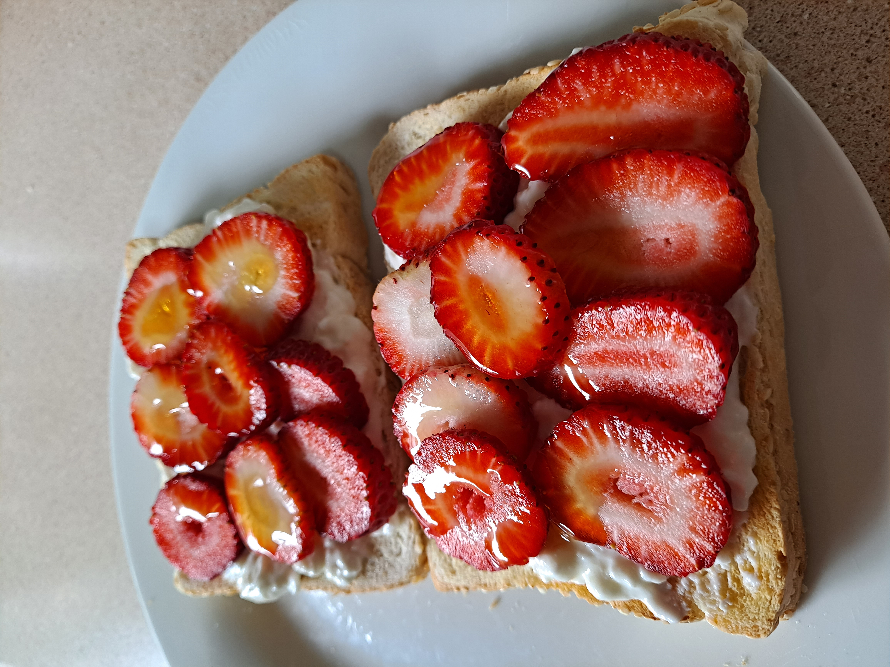

Cottage cheese Toast

Description
A crunchy, protein-packed, sweet and healthy toast to start your morning with
Ingredients
- Two pieces of bread (I recommend a low carb or low gialternative to plain white bread
- Low fat cottage cheese
- Topping of choice, I like strawberries and a drizzle of honey
Preperation Method
- Wash, dry and slice fruit of choice
- Toast bread
- Spread cottage cheese on toast
- Place strawberries or fruit of choice on top and drizzle with honey or dust with icing suger
- Enjoy your healthy breakfast